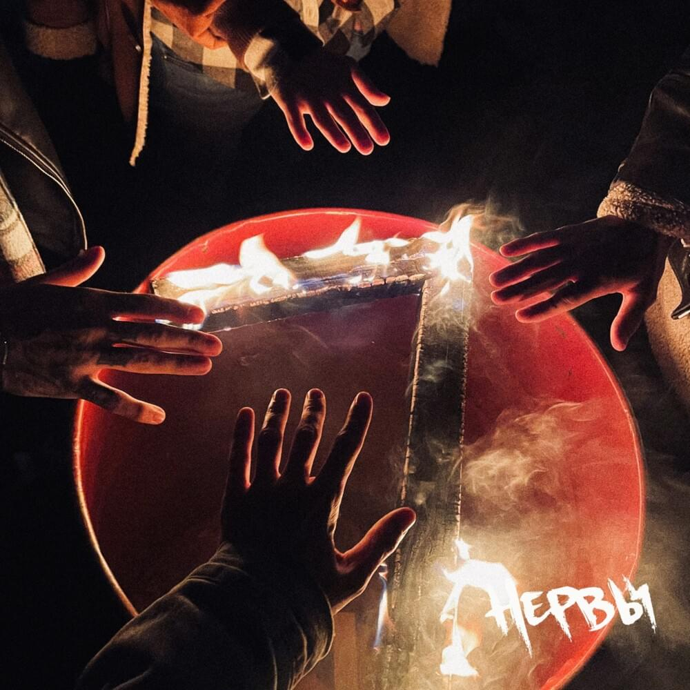

Рок

Альбом 7 (НЕРВЫ) набрал более 21 миллиона прослушиваний. 7 занимает 294-е место по прослушиваниям в Spotify среди альбомов русскоязычных исполнителей и 95-е место в VK Music в списке самых прослушиваемых официальных плейлистов. Группа исполняет с жанре рок. Песни у них могут быть как с сильным звучанием, так и со спокойным. Может понравмться многим.
Альбом Байполар (Три дня дождя) набрал набрал более 9 миллиона прослушиваний в VK Music. Также у группы имеются менее известные альбомы, такие как "Когда ты откроеш глаза", "Любовь, аддикция, марафоны", "Пепел". Все альбомы рекомендуются к прослушиванию, если вам нравится жанр рок. Также у группы есть много коллабораций с группами с такиже направлением.

Альбом Пижама с динозаврами (МУККА) набрал набрал более 4 с половиной миллиона прослушиваний в VK Music. Также у группы имеются менее известные альбомы, такие как "Таблетка", "Мёртвые цветы". Все альбомы рекомендуются к прослушиванию, если вам нравится жанр рок. Также у группы есть очень много популярных синглов и коллабораций с группами с такиже направлением. Самый прослушиваемый сингл "ДЕВОЧКА С КАРЕ", который в общем набрал почти 24 миллиона прослушиваний и стал очень известен во многих местах.